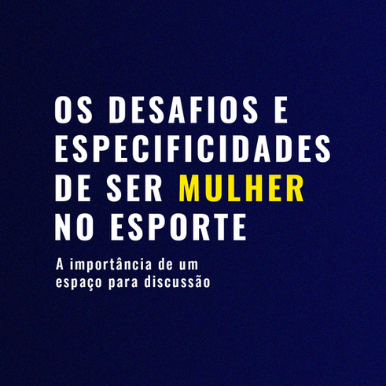

A importância de um espaço para discussão
GT Mulheres no Esporte da ABRAPESP:
Emmi Myotin
Júlia Frias Amato
Julia de Mello Pimenta
Nicolle Liane Capozzi Paiano
Valéria Gonçalves
O Grupo de Trabalho de Mulheres no Esporte da ABRAPESP surgiu a partir de uma ação do IX Congresso ABRAPESP realizado em Petrópolis, que propunha discutir e refletir sobre o envolvimento de mulheres no esporte em diferentes esferas temáticas e a criação de uma ação a partir disso. Mobilizadas pela complexidade dos debates realizados e pela multiplicidade de pontos e de ideias levantados sobre o “ser mulher no esporte”, foi desafiador selecionar um único foco de atuação. No entanto, todos permearam a necessidade de continuar a discussão e aprofundar a análise das especificidades e particularidades desses atravessamentos, motivando, assim, a criação de um grupo de trabalho dedicado à temática.
O esporte é um fenômeno sócio-cultural com diferentes formas de manifestação e a relação com a atividade física e o esporte de cada indivíduo é muito particular. Em um ano de Jogos Olímpicos e Paralímpicos em Paris que utilizaram como marca a igualdade de participação de atletas homens e mulheres, bem como contou com resultados brilhantes das participações femininas brasileiras, ainda é necessário muita discussão e avanços para que possamos discutir e pensar sobre qual igualdade estamos considerando.
A inserção da mulher no esporte é um marco de transformação social que reflete a luta por igualdade de oportunidades. Historicamente, as mulheres enfrentam desafios para conquistar espaço nas modalidades esportivas, muitas vezes limitadas por preconceitos de gênero. Hoje, o esporte feminino vive um momento de ascensão, com maior visibilidade em competições como a Copa do Mundo de Futebol Feminino e as Olimpíadas, no entanto, ainda estamos longe de alcançar a igualdade de gênero. Apesar do crescimento, é necessário maior apoio financeiro, midiático e estrutural para que o esporte feminino possa se desenvolver plenamente. Investir nessa área não apenas valoriza as atletas, mas também fortalece o debate sobre inclusão e inspira novas gerações para alcançar um cenário esportivo mais justo e igualitário.
Quando se trata de igualdade de gênero no esporte, ainda há muito a ser conquistado, especialmente em cargos técnicos e de liderança. As comissões técnicas dos Jogos Olímpicos de 2024 foram um exemplo dessa igualdade ou ainda estamos distantes de alcançar a presença feminina em cargos de liderança e responsabilidades? Na Copa do Mundo de Futebol Feminino de 2023, na qual das 32 equipes participantes, apenas 12 contavam com treinadoras mulheres – ainda assim, sendo o maior número da história. Apesar das iniciativas do Comitê Olímpico Brasileiro (COB), como encontros para mulheres treinadoras, ainda faltam espaços, incentivos e debates mais aprofundados sobre a inclusão de mulheres como técnicas, gestoras e líderes no esporte. Exemplos positivos e inspiradores como Gianetti Bonfim (treinadora e mãe do atleta Caio Bonfim), Iryna Ilyashenko (ginástica artística) e Sarah Menezes (pós-atleta olímpica e atual treinadora de judô) mostram as possibilidades de mulheres ocuparem esses cargos.
A discussão sobre equidade de gênero no esporte vai além da mera presença numérica de mulheres, ela abrange também direitos e condições de trabalho. Uma pauta relevante que emergiu nos Jogos Olímpicos é a intersecção entre a maternidade e a carreira esportiva. “Ser mãe” e “ser atleta” no Brasil são realidades que frequentemente se chocam em um cenário de falta conhecimento e aplicação de políticas públicas e de apoio institucional. Diferentes de outras profissões nas quais a licença-maternidade é um direito assegurado, as atletas que desejam a maternidade enfrentam o desafio de conciliar a vontade pessoal de ser mãe com a manutenção de suas carreiras esportivas.
Muitas atletas precisam abrir mão de contratos, afastar-se temporariamente ou até abandonar o esporte, frequentemente sem qualquer suporte financeiro ou plano de reintegração profissional. O caso da velocista Flávia Lima ilustra as dificuldades enfrentadas por atletas que incluem os desafios sociais enfrentados por mulheres que conciliam a maternidade com a carreira esportiva. Flávia enfrenta um processo judicial movido pelo ex-marido, relacionado à guarda da filha, sob a justificativa de abandono materno, no contexto em que a atleta enfrenta a alegação que sua dedicação ao esporte compromete sua maternidade por conta das agendas de treinamentos e viagens.
A luta pelo espaço das mulheres no meio esportivo vem de muitos anos e é diária, constantemente precisamos nos provar, reafirmar que esse espaço também é nosso e exigir que nossos direitos, sonhos, corpos e potenciais possam ser respeitados em suas individualidades e particularidades. No Brasil, por exemplo, o futebol feminino foi proibido pela CBF em 1941, e só em 1979 foi finalmente liberado. Além disso, mulheres foram sistematicamente marginalizadas em competições de alto nível e em cargos de liderança nas instituições esportivas. Apesar dessas barreiras, movimentos de resistência e ativismo, como as lutas por direitos iguais e o fortalecimento de equipes e modalidades femininas, ajudaram a construir uma trajetória de avanços e conquistas. Hoje, a presença feminina no esporte é cada vez mais forte, com mulheres quebrando recordes, conquistando títulos e ocupando espaços importantes nas arenas. Essa visibilidade, como a que tivemos durante as Olimpíadas, também serve de inspiração e motivação para outras mulheres, impulsionando-as a sonharem e buscarem o esporte como forma de inclusão, desenvolvimento, saúde ou rendimento.
O esporte sendo socialmente visto como majoritariamente um espaço para os homens, as ciências do esporte também foram produzidas a partir desse parâmetro. A biomecânica, fisiologia, desempenho, treinamento físico, entre outros foram construídas a partir do estudo do corpo masculino, o que gerou um modelo padronizado de treinamento e performance que, por muitos anos, desconsiderou as especificidades do corpo feminino. No entanto, a inclusão das questões relacionadas à saúde da mulher, à fisiologia feminina e aos contextos biopsicosociais envolvidos no esporte tem sido uma discussão necessária no meio esportivo, principalmente diante de contextos no qual a maioria dos profissionais atuando com equipe femininas ainda é masculina.
Se desconsideramos características fisiológicas específicas, como diferenças hormonais, ciclo menstrual, composição corporal e respostas musculares, não conseguimos olhar para o desempenho e otimização dos treinamentos e adequações necessárias que influenciam diretamente na prática, performance e recuperação dessas praticantes. Além disso, não podemos desconsiderar fatores psicossociais, como o machismo estrutural da sociedade na qual vivemos, relações de poder, pressões estéticas, experiências individuais com seus corpos e saúde, históricos de assédio e abuso em meio esportivo, como se relacionam com maternidade, direitos e etc.
A falta de estudos específicos tem gerado lacunas no conhecimento, o que torna a pesquisa e a valorização da saúde feminina no esporte fundamentais para garantir que todas as atletas, independentemente de seu sexo, possam se desenvolver de maneira saudável, eficiente e igualitária.
Nós, como profissionais da psicologia do esporte, temos que nos atentar às questões biopsicossociais que atravessam a prática esportiva das atletas com as quais trabalhamos. É indispensável pensar nas relações de poder existentes no espaço, no respeito ao corpo, saúde, individualidades e especificidades de cada praticante. Além de outros atravessamentos sociais como a questão racial, de identidade, sexualidade e como essas dinâmicas interferem no bem-estar, desempenho e desenvolvimento das atletas para que a nossa prática profissional vise o olhar para o indivíduo de forma integral.
Precisamos participar de uma construção de psicologia do esporte mais justa, crítica e política diante de contextos tão complexos e multifatoriais, levando essas discussões para o desenvolvimento da área no contexto prático e teórico. Principalmente nas universidades, que apresentam uma lacuna de disciplinas relacionadas ao esporte, tendo como consequência psicólogos formados que muitas vezes possuem o mínimo de contato e de conhecimento do campo da psicologia do esporte. Não se atentar a essas questões é negar uma história de anos de luta e resistência na área para que as mulheres possam ser realmente incluídas e consideradas no contexto esportivo. Nesse sentido, o objetivo do Grupo de Trabalho de Mulheres no Esporte da ABRAPESP é propor discussões sobre essas temáticas visando ações para a transformação do papel da mulher na sociedade, na psicologia por meio do esporte e da atividade física.